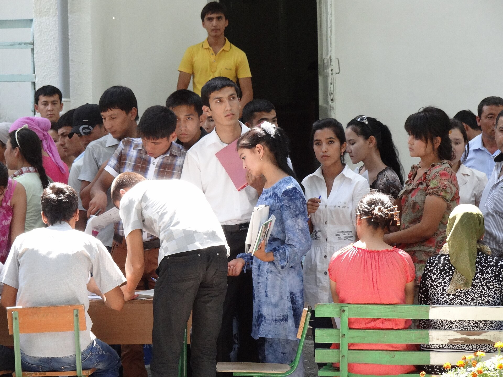

UNICEF study: in migrant families, one in three children takes on housework and sibling care
Of 702 children aged 11–17 surveyed in families where parents had left for labor migration in Uzbekistan, about a third took on duties parents used to perform; most stayed in school, but UNICEF recorded a decline in mood.

In Uzbekistan, children in families where parents have left for labor migration are increasingly taking on adult duties such as housework and caring for younger siblings. This is shown by the UNICEF study 'Effects of Migration on Children of Uzbekistan.'
What the study found
The study, conducted in March–May 2019 across four regions, was the first in Uzbekistan to examine the impact of migration on families. It surveyed 1,016 caregivers and 702 children aged 11 to 17. About a third of the children said they had taken on duties their parents used to perform. Among the 230 who described extra responsibilities, 25% said they now looked after younger siblings.
Effect on education
98% of the children with increased household duties still attended school. However, UNICEF noted a link between increased household responsibilities and a worsening of children's mood; separation from parents and financial worries were cited as additional sources of pressure.

The wider picture
As of February 2026, preschool coverage reached 78% nationally, but in 39 districts and cities it remained below 70%. According to a 2026 UNDP review, women perform more than twice as many hours of unpaid care work as men — meaning much of the household burden falls on women and girls.
A teacher's observation
Kindergarten teacher Mutabar Ruzikulova described the change in children who took charge of younger ones: the children 'seemed to become unusually serious or independent after taking charge of someone younger.' A girl quoted in the study summed it up: 'The household chores are now on my shoulders.'